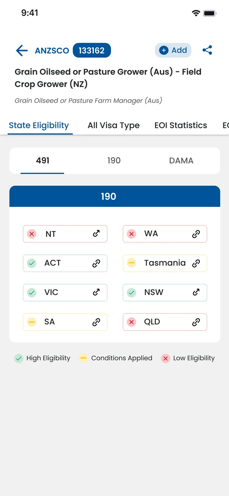
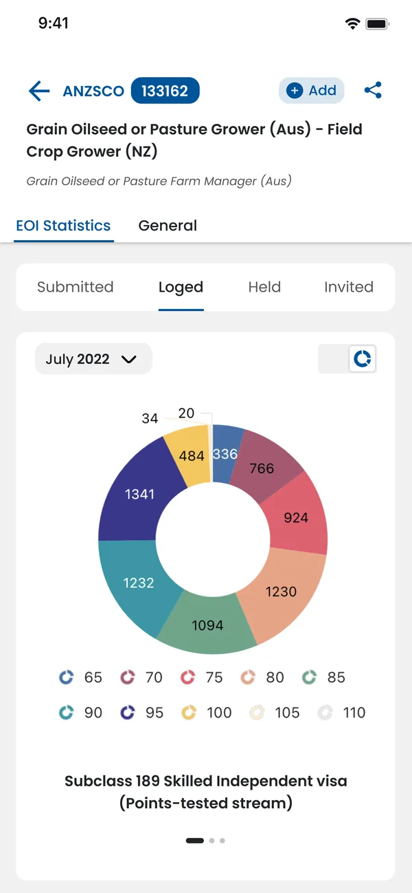

Home
Next step first.
I rebuilt the home screen into a self-serve tools hub, with search and recents, so applicants see their next step first instead of hunting through menus.
The calculators were a business requirement. I grouped them into one block above the fold and moved promotions below it.
From my 2022 OccuSearch design files.

- Tools like the point test sit at the top of home.
- Recent updates on skill assessments and visas.
- Saved occupations, so applicants pick up where they left off.
Search


Titles before codes.
People search in plain words, so search shows job titles first and the ANZSCO code beside them. The occupation page puts what matters first, and courses use the same structure, so nobody relearns the app when they switch from a job to a CRICOS course.

